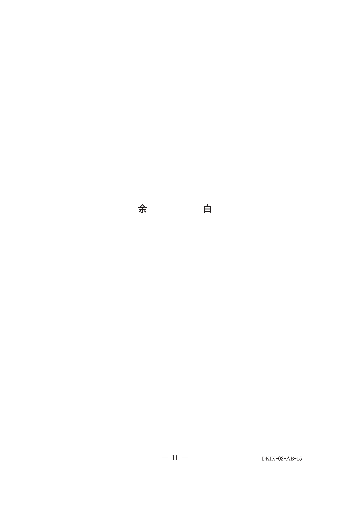
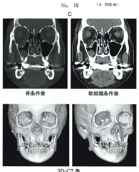

骨折：その他の頭蓋骨骨折
上顎骨骨折（Le Fort分類）
上顎骨骨折はLe Fort分類（I〜III型）で分類される。いずれの型も翼状突起骨折を伴うのが共通点である。
Le Fort分類の比較
| Le Fort I型（水平骨折） | Le Fort II型（ピラミッド型） | Le Fort III型（頭蓋顔面分離） | |
|---|---|---|---|
| 骨折線 | 鼻中隔→梨状口側縁→犬歯窩→頬骨上顎縫合を交差（上顎洞前壁）→翼口蓋窩→翼状突起外側板→上顎結節 | 前頭上顎縫合→前頭突起→涙骨→上顎前頭突起→眼窩下線（眼窩下孔）→下眼窩裂・頬骨上顎縫合→翼状突起中央 | 前頭鼻骨縫合→前頭上顎縫合→眼窩内側→下眼窩裂→翼状突起→頬骨側頭縫合 |
| 特徴 | 上顎歯槽突起・口蓋が骨体から分離。一塊となって可動性（floating maxilla） | 骨折線が錐体状→ピラミッド型骨折。眼窩底を通過 | 中顔面を構成する顔面骨が一塊として頭蓋底から分離（上顎骨全骨折） |
| 症状 | ①咬合異常 ②上顎洞の異常（鼻出血） ③皿状顔貌（dish face） ④上顎骨全体の可動性 | ①咬合異常（開咬・反対咬合） ②鼻出血 ③皿状顔貌 ④眼鏡様血腫（black eye） ⑤複視 ⑥流涙 ⑦感覚異常（眼窩下神経） ⑧嗅覚異常 | ①咬合異常（開咬・反対咬合） ②大量の鼻出血 ③顔面の上下的延長（long face） ④脳内損傷の可能性大 ⑤眼鏡様血腫 ⑥複視 ⑦感覚異常 ⑧嗅覚異常 |
- I型：皿状顔貌（dish face）+ floating maxilla
- II型：眼鏡様血腫（black eye）+ 複視 + 感覚異常
- III型：long face + 脳内損傷の可能性
- 共通：翼状突起骨折・咬合異常・鼻出血
治療
観血的整復固定を行うことが多い。顎間固定（線副子による）（1〜2週）に加え、チタン（金属）プレートによる顎内固定または骨縫合による顎内固定を行う。
非観血的整復の場合の顎間固定期間は4〜6週が必要。
頬骨・頬骨弓骨折
頬骨骨折は以下の5つの部位で生じる：①頬骨上顎バットレス ②前頭突起 ③眼窩下縁 ④頬骨弓 ⑤眼窩側壁
Knight and North分類
| 分類 | 骨折の特徴 |
|---|---|
| I群 | 非偏位（X線で確認できる骨折あり） |
| II群 | 頬骨弓骨折（弓部のみの骨折） |
| III群 | 非回転頬骨体部骨折（回転のない偏位あり） |
| IV群 | 内側回転頬骨体部骨折（内側回転を伴う偏位あり） |
| V群 | 外側回転頬骨体部骨折（外側回転を伴う偏位あり） |
| VI群 | 粉砕骨折 |
頬骨骨折の症状
- 顔面頬部の陥没
- 視覚障害（複視）
- 眼鏡様血腫（black eye）
- 鼻出血
- 患側頬部の感覚異常
- 開口障害：筋突起（側頭筋）の運動障害、咬筋起子部の転位による → 頬骨弓骨折に特徴的
咬合の異常はない（下顎骨骨折との鑑別点）。直達骨折である。
頬骨骨折の治療
頬骨体部骨折：口内法（口腔前庭部切開）または口外法（眉毛外側切開、下眼瞼切開）で整復し、金属プレート・鋼線による骨縫合・Kirschner鋼線などで固定する。
頬骨弓骨折：Gilliesのtemporal approach（側頭部皮膚切開）または口内法（口腔前庭部切開）で、以下の器具を用いて整復する。
- Roweのエレベータ
- Dingman頬骨鈎
- U字型起子
眼窩底骨折（吹き抜け骨折）
吹き抜け骨折（blowout fracture）は、眼球に直達外力が加わり眼窩内圧が上昇することで、最も薄い眼窩底が骨折するものである。
症状
- 複視（特に上方注視時）：下直筋・眼窩内脂肪の絞扼による
- 眼球陥凹（眼球沈下）
- 眼球運動制限
- 眼窩下神経領域の感覚異常（頬部のしびれ）
- 眼窩周囲の腫脹・皮下気腫
診断
- CT（冠状断）が有用：眼窩底の骨折線・下直筋の嵌入を確認
- 牽引テスト（forced duction test）：下直筋の絞扼の確認
治療
下眼瞼皮膚切開によるアプローチで観血的整復固定を行う。眼窩底の骨欠損部にシリコンシートや自家骨などを用いて修復する。
頭蓋底骨折
- ①眼鏡様血腫（raccoon eye / パンダの目）：前頭蓋底骨折の出血が眼瞼周囲に集まり変色・腫脹
- ②Battle sign（徴候）：中蓋底骨折の出血が乳様突起耳介後方周囲に皮膚の変色・腫脹として現れる
- ③鼻出血・耳出血：前頭蓋底骨折で起こる
- ④脳神経麻痺：嗅神経障害、視神経障害、動眼神経障害、外転神経障害、顔面神経障害など
- ⑤髄液漏：鼻孔、耳孔から髄液が流出する
頭蓋底骨折は顔面外傷に伴って生じることがあり、生命に関わる重篤な外傷である。顔面骨骨折の診察時には常に頭蓋底骨折の合併を念頭に置く必要がある。
整復固定に用いられる口腔外切開線
| 切開線 | 部位 | 適応 |
|---|---|---|
| A | 側頭部皮膚切開（Gilliesの切開） | 頬骨弓骨折（Roweのエレベータ使用） |
| B | 眉毛部外側皮膚切開 | 頬骨骨折（頬骨前頭縫合） |
| C | 下眼瞼皮膚切開 | 頬骨上顎骨骨折（眼窩下縁）、眼窩底骨折、Le Fort II型骨折 |
| D | 耳前側頭部皮膚切開（Al-Kayat-Bramley法） | 頬骨弓骨折、頬骨骨折 |
| E | 耳前部皮膚切開 | 関節突起骨折 |
| F | 下顎後方切開 | 関節突起骨折、下顎枝部骨折 |
| G | 下顎下縁切開 | 関節突起骨折、下顎骨体部骨折 |
※頬骨上顎縫合部、眼窩下縁、頬骨弓骨折、関節突起骨折は、口腔前庭部よりアプローチして整復することもある。
顔面骨のバットレスシステム
バットレスは顔面骨の支持構造壁である。顔面の形態保持、顔面前方や側方から加わった外力を緩衝して脳実質を保護する働き、咀嚼や咬合に耐える働きをもつ。
Champyのideal lineは、下顎骨に加わる外力の均衡がとれた応力分布線であり、この線上にプレートを設置することで安定した固定が獲得できる。
過去問
顔面外傷を伴う救急患者において頭盗底骨折が疑われるのはどれか。2つ選べ。
b Bell現象
c Battle徴候
d Vincent症状
e ホルネル症候群
【解説】頭蓋底骨折の徴候は①眼鏡様血腫（raccoon eye） ②Battle sign ③鼻出血・耳出血 ④脳神経麻痺 ⑤髄液漏の5つ。髄液漏（a）とBattle徴候（c）が該当する。Bell現象は正常な眼球反射（閉眼時に眼球が上転）、Vincent症状は下歯槽神経の知覚障害、ホルネル症候群は交感神経の障害による縮瞳・眼瞼下垂・眼球陥凹である。
頭蓋底骨折に起因するのはどれか。1つ選べ。
b 唾液瘻
c 嚥下障害
d 開口障害
e 舌根沈下
【解説】頭蓋底骨折により硬膜が破れると、髄液が鼻孔や耳孔から流出する（髄液漏）。唾液瘻は耳下腺・顎下腺損傷、嚥下障害は舌咽神経・迷走神経障害、開口障害は顎関節・咀嚼筋の障害、舌根沈下は下顎骨の後方偏位によるもので、いずれも頭蓋底骨折に特異的ではない。
50歳の女性。右側眼窩周囲の腫脹を主訴として来院した。5日前に右側顔面を殴打されたという。初診時の顔貌写真（別冊No.15A）、エックス線画像（別冊No.15B）及びCT（別冊No.15C）を別に示す。 診断名はどれか。1つ選べ。



b 頬骨弓骨折
c 吹き抜け骨折
d Le FortⅡ 型骨折
e Le FortⅢ 型骨折
【解説】顔面殴打後の眼窩周囲腫脹。CTで眼窩底の骨折と眼窩内容の上顎洞への逸脱（下直筋や眼窩脂肪の嵌入）が確認される。これは吹き抜け骨折（blowout fracture）の典型像である。頬骨骨折では頬部の陥没、Le Fort II・III型では上顎骨全体の可動性や皿状顔貌が見られるが、本症例では眼窩底に限局した骨折である。